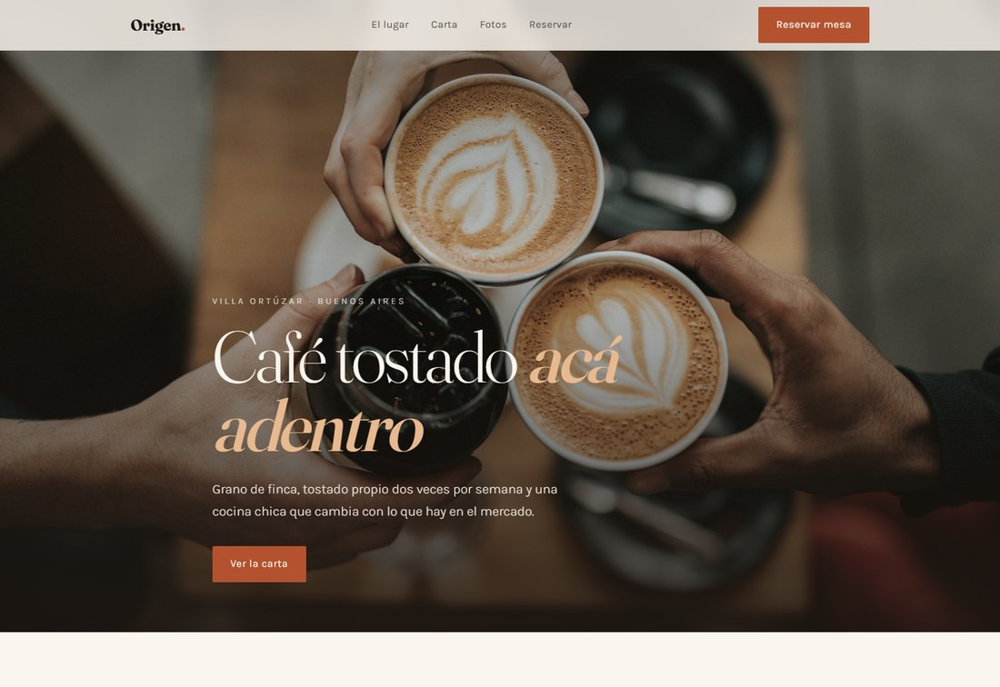
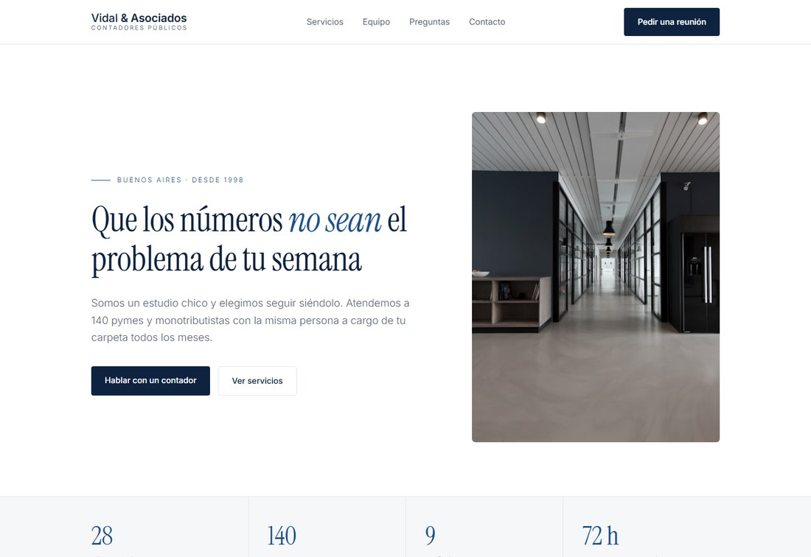
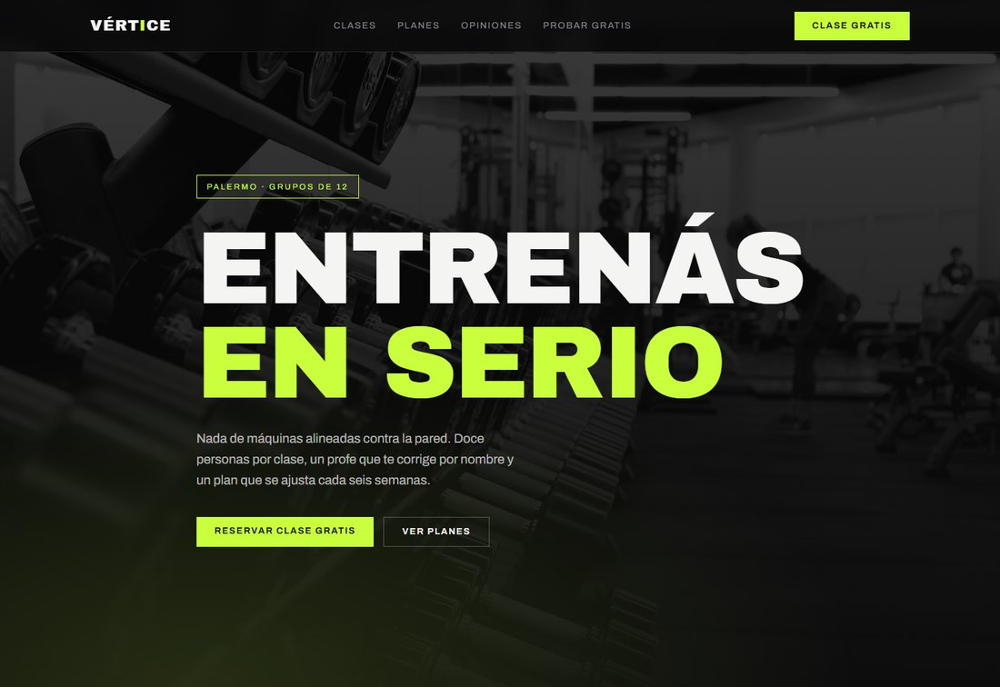
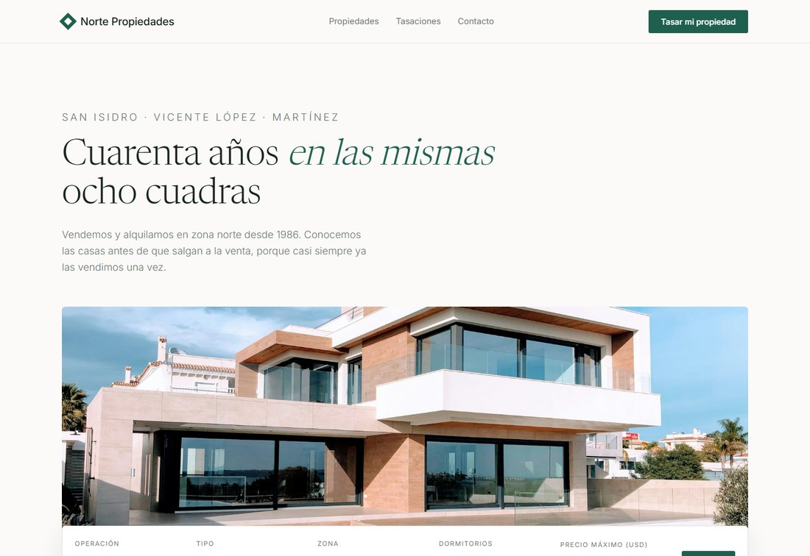
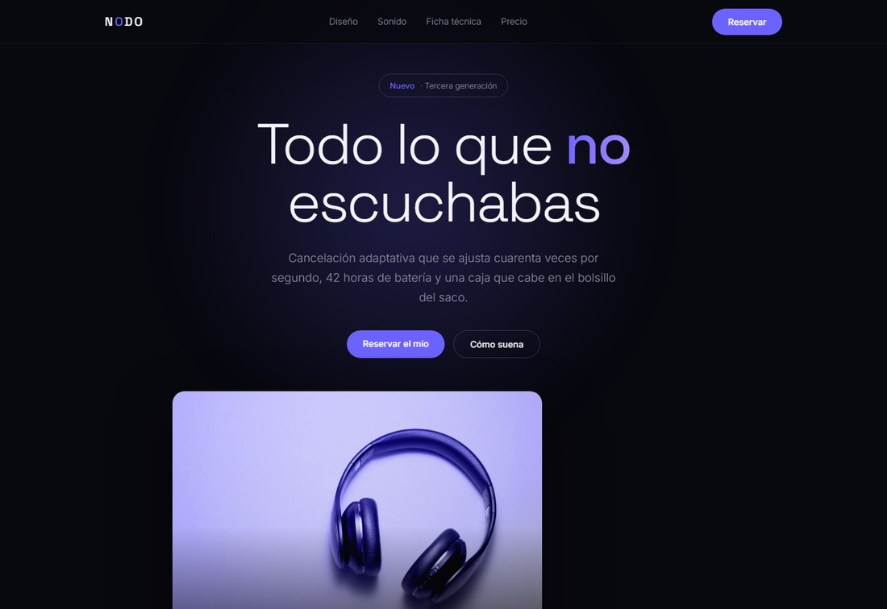

Gastronomía
Origen · Café de especialidad
Foto grande, carta legible sin hacer scroll infinito y una reserva que se completa en cuatro campos. Lo que un café necesita que la gente haga: ver el menú y sentarse.
Diseño y desarrollo web
Cada uno está pensado para un rubro distinto y resuelto con un lenguaje visual propio. No son plantillas con el color cambiado: cambian la tipografía, la estructura, el ritmo y lo que el visitante tiene que poder hacer.
Son demos. Los nombres, textos, precios y datos de contacto son inventados. Los formularios validan y responden, pero no envían nada — en un sitio real llegan a tu casilla o a WhatsApp.

Gastronomía
Foto grande, carta legible sin hacer scroll infinito y una reserva que se completa en cuatro campos. Lo que un café necesita que la gente haga: ver el menú y sentarse.

Servicios profesionales
Acá el trabajo del diseño es generar confianza. Mucho aire, grilla firme, cifras que respaldan y las preguntas incómodas contestadas antes de que las haga.

Fitness
Alto contraste, tipografía pesada y una sola cosa para hacer: reservar la clase gratis. Los planes se comparan de un vistazo y el precio no está escondido.

Inmobiliaria
El más parecido a una aplicación: doce propiedades con buscador por operación, zona, dormitorios y precio, orden por valor o superficie, y ficha ampliada. Los filtros funcionan de verdad.

Producto / e-commerce
Una sola página que cuenta un producto de arriba a abajo. El selector de color cambia la foto y tiñe el sitio entero, y la ficha técnica está completa para el que quiere el detalle.
Arrancamos con una charla de media hora para entender qué tiene que lograr el sitio. De ahí sale una propuesta con alcance, plazo y precio cerrado.